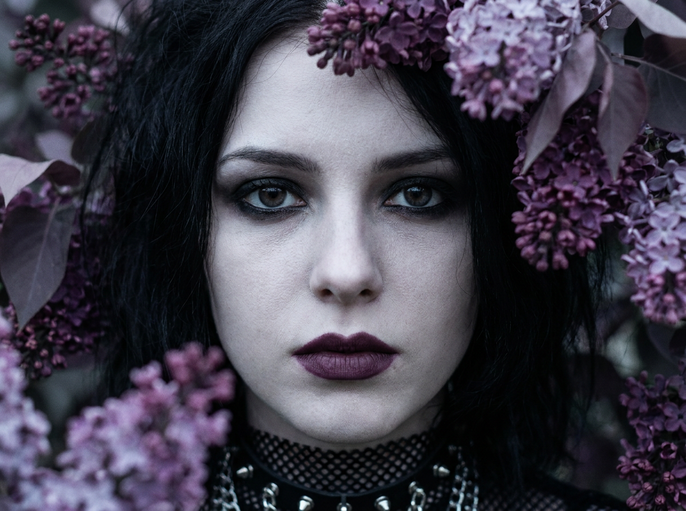
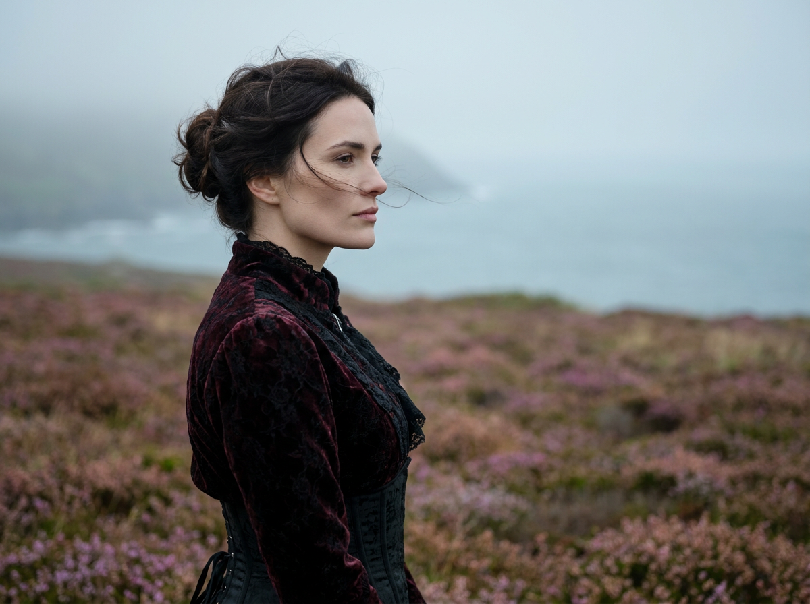
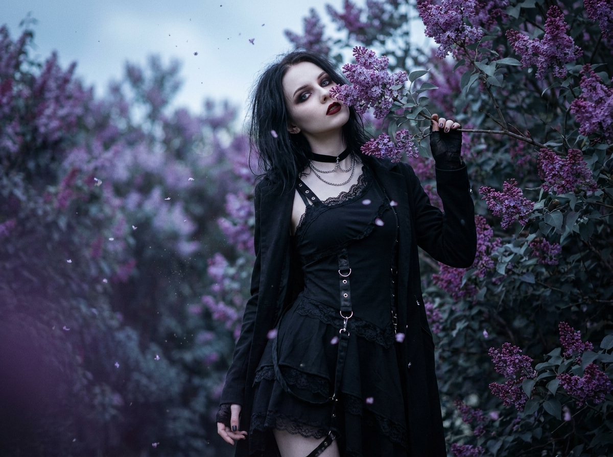
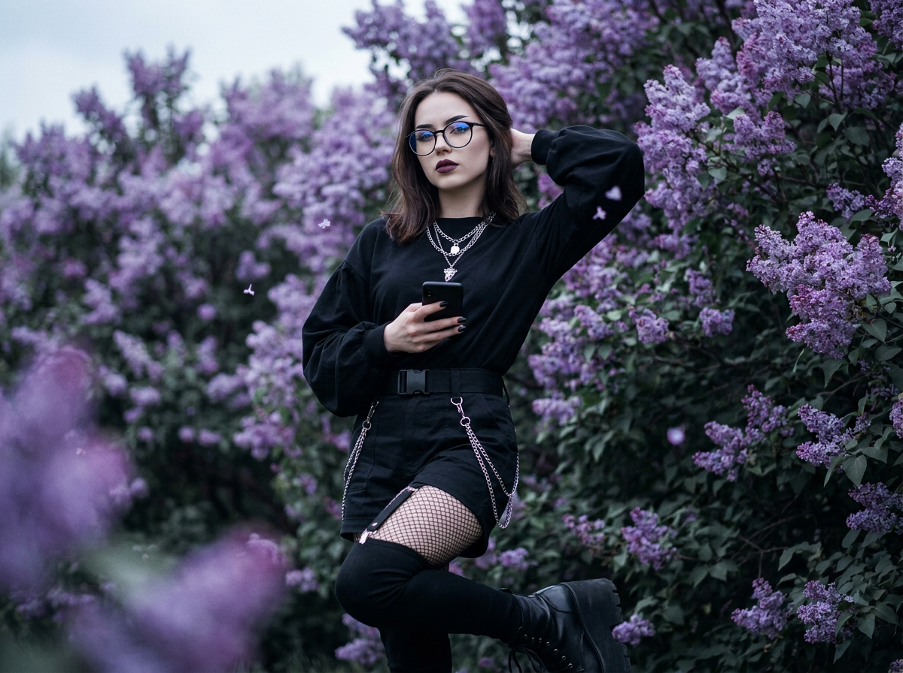
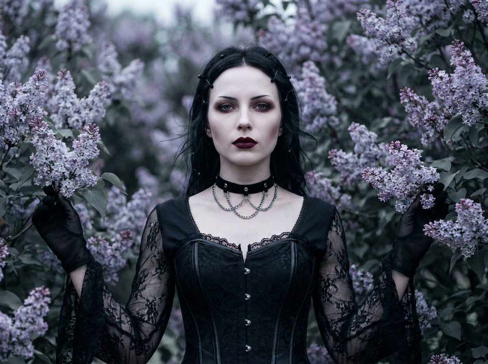
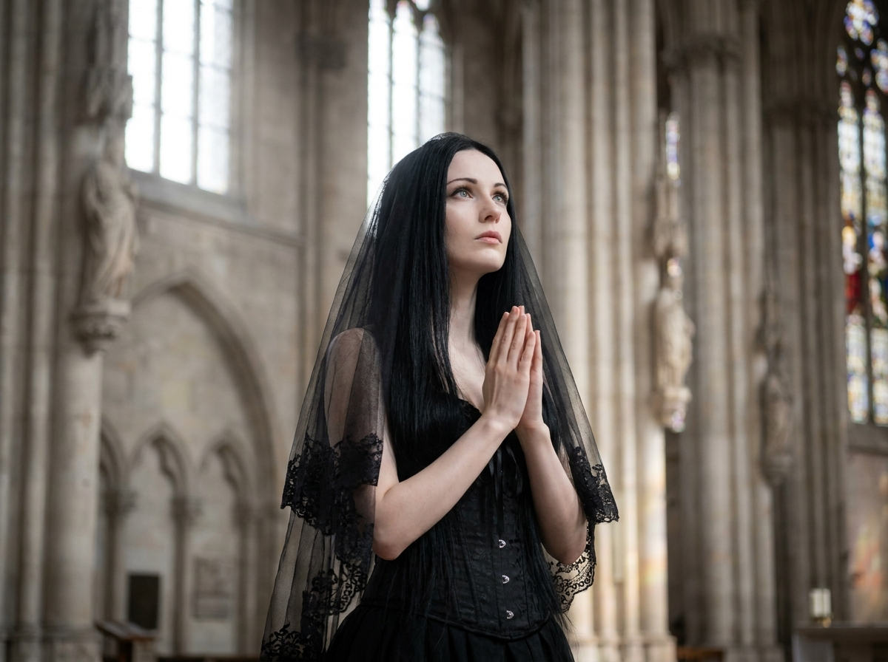
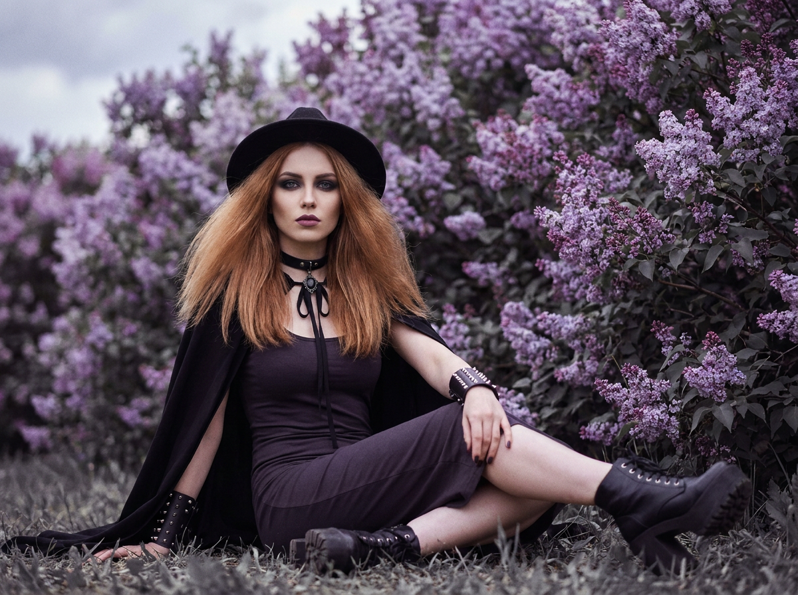

Готическое ИИ-фото: 7 промптов для нейросети

Готический образ легко превращается в случайный набор чёрной одежды, тяжёлого макияжа и нечитаемого фона. Генерация помогает собрать цельный кадр: задать позу, свет, фактуру кружева, выражение лица и нужную степень мрачности.
Внутри — семь сценариев для разных задач: экстремальный крупный план, портрет у моря, съёмка среди сирени, полный рост, образ с телефоном и очками, корсетный fashion-кадр и загадочная сцена в неоготическом храме.
Как сгенерировать такое фото: пошагово
Нужен снимок анфас при ровном свете, лицо в кадре целиком, без тёмных очков и головных уборов. Разрешение от 1000 пикселей по короткой стороне. Чем чётче исходник, тем точнее модель повторит черты.
Выберите сценарий ниже и нажмите «Копировать» — текст уйдёт в буфер целиком, вместе с командой сохранения внешности. Эта команда стоит первой строкой и отвечает за то, чтобы на выходе было ваше лицо, а не случайное.
Кнопка «Сгенерировать» рядом с каждым промптом открывает модель в новой вкладке. Nano Banana Pro работает с референсом лица — в отличие от моделей, которые генерируют портрет с нуля и узнаваемость теряют.
Промпт — в поле ввода, портрет — через загрузку референса. Порядок значения не имеет, но без референса команда сохранения внешности работать не будет: модели нечего сохранять.
Для сторис и ленты берите 9:16, для превью и обложек — 4:3. Первый результат редко идеален: если поза или свет ушли не туда, поправьте соответствующую часть промпта и запустите заново. Обычно хватает двух-трёх итераций.
7 промптов для генерации
1. Экстремальный портрет лица
Строго сохранить внешность по загруженному референсу: черты лица, пропорции, мимику и текстуру кожи без изменений. Фотореалистичный кинематографичный extreme close-up готической девушки, лицо занимает почти весь вертикальный кадр. Голова развёрнута на три четверти и слегка наклонена, глаза смотрят прямо в объектив. Композиция face-first: верх волос и боковые края причёски обрезаны, шея и плечи видны лишь частично. Сделай акцент на выразительных тёмных глазах, чёткой подводке, аккуратном smoky gothic makeup и матовой помаде оттенка тёмной сливы или бордо. Кожа очень светлая, фарфоровая, с холодным подтоном и натуральной микротекстурой. Волосы немного растрёпаны: объём у корней, тонкие выбившиеся пряди касаются щёк и линии глаз. Внизу кадра частично видны чёрное кружево, сетка, ошейник или воротник с металлическими шипами, боковые цепочки и подвески. Передай фактуру ткани, кожи и металла, мягко размытый тёмный фон, реалистичный свет на лице, высокую детализацию.
2. Аристократка у холодного моря

Строго сохранить внешность по загруженному референсу: черты лица, пропорции, мимику и текстуру кожи без изменений. Вертикальный фотореалистичный портрет девушки в поле мелких розово-сиреневых цветов на фоне холодного моря и туманного побережья. Сохрани узнаваемость лица по загруженному референсу: форму лица, глаза, брови, нос, губы, скулы, подбородок, линию роста волос, тон кожи, возрастные особенности и индивидуальные черты. Девушка стоит статно и изящно, корпус развёрнут вполоборота, голова повернута в правый профиль, взгляд уходит вдаль. Выражение спокойное, задумчивое, холодное, утончённое и слегка меланхоличное. Прямая осанка, вытянутая шея, красиво очерченная челюсть. Тёмные, почти чёрные или очень тёмно-каштановые волосы собраны в мягкую небрежную причёску. Одежда выдержана в строгом современном готическом стиле: чёрные ткани, кружево, высокий воротник и деликатные металлические детали. Холодная цветокоррекция, туман, рассеянный свет, тонкое боке, фотореалистичная кожа.
3. Готика среди цветущей сирени

Строго сохранить внешность по загруженному референсу: черты лица, пропорции, мимику и текстуру кожи без изменений. Кинематографичный фотореалистичный dark fashion-кадр: девушка в современном готическом образе стоит среди густых кустов цветущей сирени. Фиолетовые соцветия образуют естественную раму, отдельные лепестки и немного пыльцы парят в воздухе. Лес не нужен — только плотные кусты, холодный пасмурный весенний день, мягкий рассеянный свет и неглубокое боке. Используй серо-синюю и фиолетовую палитру, лёгкое film grain. У девушки слегка растрёпанные волосы, бледная фарфоровая кожа, выразительные тёмные стрелки или smoky eyes, матовая помада тёмно-бордового оттенка. На ней асимметричное чёрное платье или сарафан поверх тёмного топа, сочетание кружева и матовой ткани, ремешки и сдержанная готическая фурнитура без откровенности. Добавь чокер, тонкие цепочки, небольшие металлические детали и длинный чёрный жакет или плащ до середины голени. Натуральные пропорции, реалистичная ткань, fashion-съёмка.
4. Взгляд через плечо

Строго сохранить внешность по загруженному референсу: черты лица, пропорции, мимику и текстуру кожи без изменений. Полноразмерный фотореалистичный fashion/goth portrait. Девушка стоит корпусом в профиль-три четверти, но поворачивает голову к камере; взгляд направлен через плечо, подбородок слегка опущен, руки свободно лежат вдоль тела. Волосы прямые, тёмные, с гладкой текстурой и несколькими аккуратными прядями у лица. Кожа бледная, холодного оттенка, без пластикового эффекта. Макияж выразительный: чёткая подводка, smoky или graphic gothic eyes, тонкий контуринг, матовая помада нюдово-бордового либо сливового тона. Наряд собран из чёрного полупрозрачного кружева и сетки с заметным узором, длинные рукава украшены шипами и металлическими конусами на плечах и вдоль верхней части. На талии широкий кожаный пояс с шипами и фурнитурой, на бёдрах несколько ярусов цепочек, на запястьях ремешки. На спине виден fashion-вырез с тонкими переплетёнными ремнями, без откровенности. Полный рост, студийный или нейтральный тёмный фон, мягкий кинематографичный свет, детальные материалы.
5. Сирень, очки и смартфон

Строго сохранить внешность по загруженному референсу: черты лица, пропорции, мимику и текстуру кожи без изменений. Фотореалистичная кинематографичная fashion-фотография в полный рост: девушка в современном готическом стиле стоит в центре среди густых цветущих кустов сирени. Фиолетовые метёлки заполняют фон и частично обрамляют фигуру, создавая эффект облаков; лёгкая пыльца и редкие лепестки почти незаметно подсвечены. Корпус слегка развёрнут на три четверти. Одна рука заведена за голову, вторая держит чёрный смартфон на уровне корпуса. Поза расслабленная и уверенная, голова немного повернута, взгляд идёт в сторону камеры через круглые очки с тёмной оправой. Стёкла без сильного блика, но с реалистичными антибликовыми отражениями. Волосы средней длины, прямые или слегка волнистые, аккуратно уложены. Макияж минималистичный готический: чёткие брови, выразительные глаза, матовая помада глубокого сливового оттенка. Одежда чёрная, с кружевом, матовой тканью, чокером, ремешками и неброской металлической фурнитурой. Мягкий пасмурный свет, натуральная кожа, резкая фигура и умеренное боке.
6. Корсетный образ в сирени

Строго сохранить внешность по загруженному референсу: черты лица, пропорции, мимику и текстуру кожи без изменений. Фотореалистичный кинематографичный портрет девушки среди цветущих кустов сирени. Окружение заполняют плотные фиолетовые соцветия, но лицо и фигура остаются главным акцентом; свет мягкий, рассеянный, с холодным весенним настроением. Героиня одета в структурированный современный готический образ: чёрный корсет или корсетное платье с каркасом и моделирующей посадкой, подчёркнутая талия, сочетание кружева, матовой ткани и отдельных деталей из чёрной экокожи. Рукава длинные или полупрозрачные, на запястьях могут быть кружевные манжеты либо перчатки. На шее чёрный бархатный или металлический чокер, дополненный тонкими цепочками с серебристой фурнитурой. Добавь аккуратные заклёпки, ремешки и небольшие готические металлические элементы, без откровенности. Кожа бледная, фарфоровая, но реалистичная; макияж драматичный, естественный: smoky eyes или графичная подводка, лёгкий контуринг, матовая бордовая или тёмно-сливовая помада. Волосы тёмные, с возможными небольшими декоративными деталями. Крупный или средний портрет, натуральные фактуры.
7. Молитва в неоготическом храме

Строго сохранить внешность по загруженному референсу: черты лица, пропорции, мимику и текстуру кожи без изменений. Вертикальный фотореалистичный портрет девушки внутри величественного собора или неоготического храма. Она занимает центр композиции и стоит в спокойной, возвышенной, аристократичной позе. Корпус слегка повёрнут, голова мягко наклонена в сторону, взгляд направлен вверх и немного вбок; выражение лица тихое, сосредоточенное, загадочное, без театральной гримасы. Руки сложены перед грудью в жесте молитвы, ладони плотно соприкасаются, пальцы тонкие и изящные. Сохрани полное сходство с загруженным референсом: форму лица, глаза, брови, нос, губы, скулы, подбородок, линию роста волос, оттенок кожи, возрастные особенности и индивидуальное выражение. Лицо естественное и детализированное. Одежда современная готическая: чёрное платье строгого силуэта, кружево, высокий воротник, длинные рукава, чокер, тонкие цепочки и сдержанная металлическая фурнитура. В интерьере — высокие своды, каменная фактура, неоготические арки и приглушённый свет через витражи. Холодная палитра, мягкие лучи, реалистичные тени, кинематографичная глубина резкости.
Что важно учесть в этом стиле
Готика держится не только на чёрном цвете. Работают контрасты: фарфоровая кожа и тёмная помада, холодный воздух и металлические детали, мягкая сирень и строгий силуэт. Если перечислить слишком много украшений, нейросеть начнёт смешивать цепочки, шипы и ремешки в одну нечитаемую массу.
Для портретов полезно отдельно задавать крупность кадра, положение головы и направление взгляда. Для полного роста — описывать стопы, руки и корпус. Технические параметры тоже помогают: вертикальное соотношение 2:3 или 4:5, объектив 85 мм для портрета, 50 мм для fashion-сцены, диафрагма f/2–f/4 и мягкий рассеянный свет.
Идеи для вариаций
- Заменить сирень на тёмные розы, сухие травы или белые колокольчики.
- Перенести съёмку из собора в заброшенную оранжерею с витражными окнами.
- Добавить красный источник света сбоку, оставив основной свет холодным.
- Сделать версию в эстетике викторианской траурной моды с вуалью и камеей.
- Попросить нейросеть о плёночной фактуре 35 мм, лёгком зерне и приглушённых тенях.
- Сменить портретный объектив 85 мм на 35 мм, чтобы показать архитектуру и окружение.
Как собрать свой промпт
Начните с формата кадра и действия: крупный портрет, полный рост, взгляд через плечо или молитвенная поза. Затем добавьте внешность, макияж, причёску и одежду. Локацию описывайте конкретно: не «мрачное место», а «неоготический собор с каменными арками и светом через витражи».
В финале задайте свет, объектив, глубину резкости и качество материалов. Для сохранения лица укажите, что референс нужно использовать для формы глаз, носа, губ, скул и линии роста волос. Один промпт лучше посвящать одной сцене: семь главных действий и десяток аксессуаров сразу снижают точность результата.
Ошибки, из-за которых кадр не получается
- Слишком общая готика. Слова «мрачный образ» не объясняют, нужны ли кружево, корсет, сетка, чокер или цепочки.
- Несовместимая композиция. Нельзя одновременно просить экстремальный крупный план и показать одежду в полный рост.
- Перегруженный декор. Десятки шипов, ремней и подвесок часто превращаются в лишние детали на руках и лице.
- Неправильный свет. Жёсткая вспышка убирает атмосферу, а слишком тёмная сцена съедает фактуру чёрной ткани.
- Неуточнённые руки. Для молитвы, телефона и жеста за головой нужно отдельно описывать положение пальцев и запястий.
- Слепое доверие референсу. Даже при точном описании лицо может немного измениться, поэтому стоит сделать несколько попыток и выбрать самый близкий вариант.
Частые вопросы
Как сделать такое ИИ-фото бесплатно?
Попробуйте Kandinsky и Шедеврум: у них есть бесплатная генерация, но качество, очередь и поддержка референсов могут меняться. Krea AI и Arena.ai также предлагают бесплатный доступ в отдельных режимах, однако число генераций, скорость и доступные модели ограничены. Для точного сходства загрузка референса поддерживается не во всех режимах, а результат не гарантируется: лучше сделать несколько вариантов и проверить правила сервиса для личных фотографий.
Как сохранить сходство с человеком на фото?
Загрузите чёткий референс без сильных фильтров и отдельно опишите форму лица, глаза, нос, губы, скулы, тон кожи и линию роста волос. Не меняйте одновременно возраст, ракурс и причёску. Если сервис поддерживает силу влияния изображения, начинайте со среднего значения и повышайте его постепенно.
Какой формат выбрать для готического портрета?
Для карточки профиля подойдут 4:5 и 1:1, для публикации или обложки — вертикальный 2:3 или 9:16. Крупный портрет лучше генерировать в 4:5, а сцену с собором, сиренью и полной фигурой — в 2:3, чтобы оставить место по краям.
Почему чёрная одежда получается плоской?
Добавьте несколько материалов с разной отражающей способностью: матовую ткань, кружево, экокожу, металл и сетку. Укажите боковой или контровой свет, который отделит силуэт от фона. Также полезно задать видимую фактуру ткани и умеренный контраст, иначе чёрные детали сольются в одно пятно.